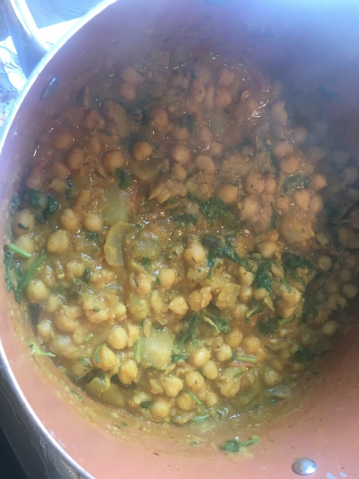

Who We Are
DesiFOODSpotters
Pulihara, Pulihara, Pulihara, Pulihara, Pulihara, Pulihara, Pulihara, Pulihara, Pulihara, Pulihara, Pulihara, Pulihara.
What We Do
All yummy tasks
- Connect with local food makers
- Connect with local food makers
- Connect with local food makers
- Connect with local food maker
- Connect with local food makers
What People Are Saying
Testimonials
-
"love the spicyness of Biryani"
Ranveer Kapoor, CEO of NoNameCompany -

"Sweets are yummy"
Alia Padukone, President of Fak-o-gram -

"Awesome to see healthy foodwhich is also tasty."
Priyanka Chole, CFO of Foodchat